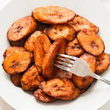

Fried Plantain

Fried plantain, also called "dodo" in Nigeria,
is a simple and delicious side dish made from ripe
plantains sliced and fried until golden and crispy.
Ingredients:
- 2 ripe plantains
- 1/2 teaspoon salt
- Vegetable oil for frying
Steps:
- Peel plantains and slice into rounds or diagonal pieces
- Sprinkle lightly with salt if desired.
- Heat oil in a frying pan over medium heat.
- Fry plantain slices until golden brown on both sides.
- Remove and drain on paper towels.
- Serve as a snack or side dish.
Back to Home